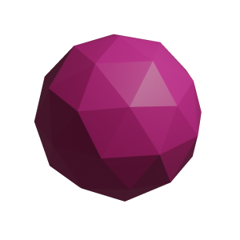
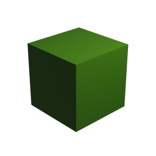
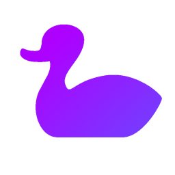
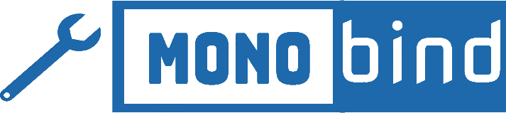

About Angouri
The name Angouri comes from the Greek αγγούρι, meaning “cucumber”.
You found us! :) We're a group of FOSS enthusiasts, working on some projects. We genuinely think that OSS is our real bright future. There is no requirement to start contributing to our projects. Moreover, by contributing to them, you contribute to humanity.
Main languages used: C#, C++, F#.
Our projects

AngouriMathAngouriMath is a symbolic algebra library for working with math expressions and the only actively maintained and developed symbolic algebra library for .NET. It performs arithmetic, calculus, linear algebra, boolean logic and set operations, parses expressions, and builds their LaTeX representations. Computation interruption and its F# wrapper make it convenient for industrial use. It is suited for C# and F#.

GenericTensorGenericTensor is the only fully implemented generic tensor library for C#. It works with generic multidimensional arrays, supports some matrix operations, and allows tensors of custom types. Operations rely on a special provider for the element type; for example, adding two arrays requires a method that adds two values of type T. It is also optimized as much as possible while still supporting any type.

Honk#Honk# is a general-purpose library aimed at making declarative programming in C# easier. It provides fluent method extensions such as Pipe, lazy properties, and an anonymous union type. It may fit projects that cannot afford to be rewritten in more declarative languages but would benefit from such features.
MxEngine
MxEngine is an educational modern C++ general-purpose 3D game engine. Right now MxEngine is developed only by #Momo, but any contributions are welcome and will be reviewed. For now MxEngine supports OpenGL as its graphics API and targets x64 only.

MonoBindMonoBind is a lightweight header-only library that exposes C++ types in C# and vice versa, mainly to create C# bindings of existing C++ code.
DotnetBenchmarks
DotnetBenchmarks collects benchmarks for different situations, as well as thoughts and articles for developers about improving their software's performance.
About Angouri’s people
WhiteBlackGoose
I'm a big fan of OSS, and I created and contributed to a few open-source projects. Currently, I'm working on AngouriMath. Sometimes I write articles about techniques and features in symbolic math or C#. Reach me on Discord: Oryp4ik#0120.
MomoDeve
I’ve been programming C++ and C# for around three years, mainly working on MxEngine game engine during the last year. My previous experience also include my own programming language - MSL (bison parser + custom bytecode + own VM) and mono runtime binder for C++ - monobind.
Happypig375
I've been enjoying .NET since 2014, from VB.NET, then C#, now F#. I believe in automation through programming, specifically automating answering school math for checking, where AngouriMath and CSharpMath make the most intuitive calculator app ever. However, with other commitments, like University studies, a startup, paid open source, and unpaid open source, excuse me for not contributing much. I'm Happypig375#2425 on Discord.
GitHub · Reddit · Telegram · E-Mail: hadrianwttang@outlook.com
TheSeems
Java developer loving C#, C++, Python and Go, mainly work on backends, frameworks, bots.
Contributions
Anyone is more than welcomed to make contributions to any Angouri's projects. Join our Discord server to know about our current plans and tasks. Fork the repository of the project you want to work on, commit your changes, and make a pull request.